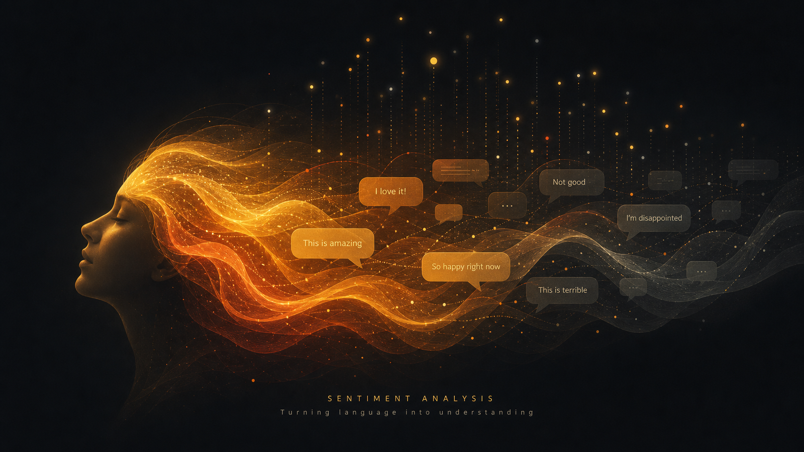

الشبكات العصبية الاصطناعية: كيف يتعلم الكمبيوتر كما يتعلم الإنسان؟
استكشاف معمّق لمبادئ الشبكات العصبية الاصطناعية، وكيف تحاكي عمل الدماغ البشري في التعلم وحل المشكلات المعقدة.

تحليل المشاعر باستخدام Python وNLP: دليل عملي من الصفر
دليل عملي لبناء نموذج تحليل المشاعر من الصفر باستخدام مكتبات Python الحديثة.
اقرأ المقال ←كيف تستخدم البيانات في اتخاذ قرارات استراتيجية أذكى؟
منهجية متكاملة لتوظيف تحليل البيانات في دعم القرارات على مستوى الإدارة العليا.
اقرأ المقال ←
خوارزمية Random Forest: الدليل الشامل مع تطبيق عملي
شرح معمّق لخوارزمية الغابة العشوائية مع تطبيق عملي وتحليل مقارن للأداء.
اقرأ المقال ←
معالجة البيانات الضخمة مع Apache Spark: من النظرية إلى التطبيق
كيفية استخدام Apache Spark لمعالجة وتحليل ملايين السجلات بكفاءة عالية.
اقرأ المقال ←نماذج إدارة الأداء المؤسسي في عصر البيانات ورؤية ٢٠٣٠
كيف تحوّل المنظمات الحديثة أنظمة إدارة الأداء باستخدام مؤشرات مدفوعة بالبيانات.
اقرأ المقال ←